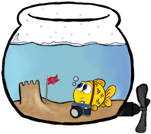
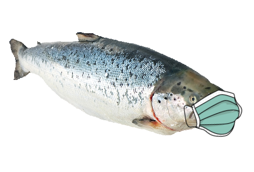

Velkommen til Under restaurant!

Under er verdens største undervanns-restaurant, som ligger i Lindesnes, Norge.
Restauranten har blitt et stort turist-spot for alle havets skapninger.
Det er egentlig ganske merkelig at menneskene har laget et akvarium hvor vi fisker kan studere dem.
Mange fisker som jobber med biologi, eller som er spesielt interessert i mennesker reiser hit, da vi kan studere menneskene på trygg avstand.
Som vi alle vet er menneskene et av de skumleste rovdyrene i verden. De spiser jo mesteparten av andre dyr, inkludert fisk og skalldyr. Dette er noe av maten som blir servert på Under
Restauranten har blitt et stort turist-spot for alle havets skapninger.
Det er egentlig ganske merkelig at menneskene har laget et akvarium hvor vi fisker kan studere dem.
Mange fisker som jobber med biologi, eller som er spesielt interessert i mennesker reiser hit, da vi kan studere menneskene på trygg avstand.
Som vi alle vet er menneskene et av de skumleste rovdyrene i verden. De spiser jo mesteparten av andre dyr, inkludert fisk og skalldyr. Dette er noe av maten som blir servert på Under
Der er det noen! La oss gå og si hei

Jeg heter Gull-Ivar. Hvem er du?
Yoooooooooooooooooo!

Jeg heter Lakselars!
Er dette din første tur hit?
Er dette din første tur hit?
Ja! Jeg er på en reise for å utforske!
...
Hvorfor svømmer du så annerledes?
...
Hvorfor svømmer du så annerledes?
Godt spørsmål!
Her på Under kommer det noen ganger mennesker som trener oss opp til å bli i området. Vet ikke helt hva som er greia, men jeg tror kanskje de liker å studere eller se på oss...?
Jeg fant ut at jeg får sååååå mye mer oppmerksomhet om jeg bruker mine "moves". Det + mine amazing looks. Da får man alt man trenger.
Her på Under kommer det noen ganger mennesker som trener oss opp til å bli i området. Vet ikke helt hva som er greia, men jeg tror kanskje de liker å studere eller se på oss...?
Jeg fant ut at jeg får sååååå mye mer oppmerksomhet om jeg bruker mine "moves". Det + mine amazing looks. Da får man alt man trenger.
Hmm, høres rart ut...
Hva er greia med masken?
Hva er greia med masken?
Covid-19? Nei for noe tull!
Dette er selvfølgelig tiltak mot smitte av laksevirus! Følg litt med a...
Dette er selvfølgelig tiltak mot smitte av laksevirus! Følg litt med a...
Hmm, for en rar kar.
Det var gøy å lære om Under da!
Nå vil jeg reise et annet sted. Skal vi dra tilbake til hovedmenyen?
Det var gøy å lære om Under da!
Nå vil jeg reise et annet sted. Skal vi dra tilbake til hovedmenyen?